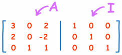
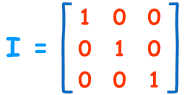
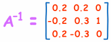
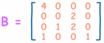
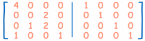
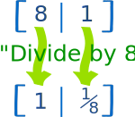
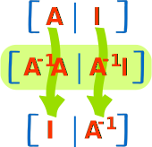

Inverse of a Matrix
using Elementary Row Operations
Also called the Gauss-Jordan method.
This is a fun way to find the Inverse of a Matrix:
The "Elementary Row Operations" are simple things like adding rows, multiplying and swapping ... but let's see with an example:
Example: find the Inverse of "A":

We start with the matrix A, and write it down with an Identity Matrix I next to it:

(This is called the "Augmented Matrix")
Identity Matrix
The "Identity Matrix" is the matrix equivalent of the number "1":

A 3x3 Identity Matrix
- It is "square" (has same number of rows as columns),
- It has 1s on the diagonal and 0s everywhere else.
- It's symbol is the capital letter I.
Now we do our best to turn "A" (the Matrix on the left) into an Identity Matrix. The goal is to make Matrix A have 1s on the diagonal and 0s elsewhere (an Identity Matrix) ... and the right hand side comes along for the ride, with every operation being done on it as well.
But we can only do these "Elementary Row Operations":
- swap rows
- multiply or divide each element in a a row by a constant
- replace a row by adding or subtracting a multiple of another row to it
And we must do it to the whole row, like this:

Start with A next to I
Add row 2 to row 1,
then divide row 1 by 5,
Then take 2 times the first row, and subtract it from the second row,
Multiply second row by -1/2,
Now swap the second and third row,
Last, subtract the third row from the second row,
And we are done!
And matrix A has been made into an Identity Matrix ...
... and at the same time an Identity Matrix got made into A-1

DONE! Like magic, and just as fun as solving any puzzle.
And note: there is no "right way" to do this, just keep playing around until we succeed!
(Compare this answer with the one we got on Inverse of a Matrix using Minors, Cofactors and Adjugate. Is it the same? Which method do you prefer?)
Larger Matrices
We can do this with larger matrices, for example, try this 4x4 matrix:

Start Like this:

See if you can do it yourself (I would begin by dividing the first row by 4, but you do it your way).
You can check your answer using the Matrix Calculator (use the "inv(A)" button).
Why it Works

I like to think of it this way:
- when we turn "8" into "1" by dividing by 8,
- and do the same thing to "1", it turns into "1/8"
And "1/8" is the (multiplicative) inverse of 8
Or, more technically:

The total effect of all the row operations is the same as multiplying by A-1
So A becomes I (because A-1A = I)
And I becomes A-1 (because A-1I = A-1)